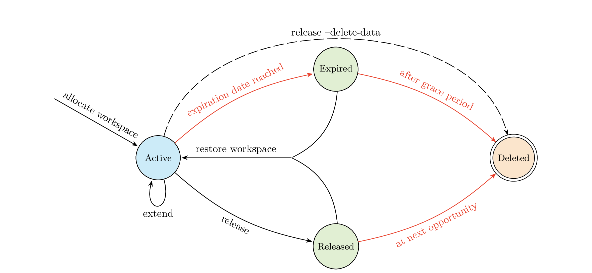

Workspaces#
Storage systems differ in terms of capacity, streaming bandwidth, IOPS rate, etc. Price and efficiency don’t allow to have it all in one. That is why fast parallel filesystems at ZIH have restrictions with regards to lifetime and volume quota. The mechanism of using workspaces enables you to better manage your HPC data. It is common and used at a large number of HPC centers.
!!! note
A **workspace** is a directory, with an associated expiration date, created on behalf of a user
in a certain filesystem.
A workspace progresses through distinct states during its lifetime, as shown below.

{: align=”center”}A workspace can be in one of the four states Active, Expired, Released and Deleted.
It always starts in the active state upon creation. Once the workspace has reached its expiration
date, it gets moved to a hidden directory and enters a grace period. An expired workspace is
still physically present on the disk and may be restored.
Once the grace period ends, the workspace is permanently deleted. Users may also release
a workspace manually before it expires. A released workspace is handled similarly
to a workspace in the expired state, except that a released workspace is marked for deletion
at the next available opportunity, disregarding the grace period defined for expired workspaces.
Using --delete-data when releasing a workspace, skips the released state entirely
and deletes the workspace instantly.
The maximum lifetime of a workspace depends on the storage system. All workspaces can be extended a certain amount of times.
!!! tip
Use the faster filesystems if you need to write temporary data in your computations, and use
the capacity oriented filesystems if you only need to read data for your computations. Please
keep track of your data and move it to a capacity oriented filesystem after the end of your
computations.
Workspace Management#
Workspace Lifetimes#
Since the workspace filesystems are intended for different use cases and thus differ in performance, their granted timespans differ accordingly. The maximum lifetime and number of renewals are provided in the following table.
Filesystem (use with parameter |
Max. duration in days |
Extensions |
Keeptime in days |
|---|---|---|---|
|
100 |
10 |
30 |
|
365 |
2 |
60 |
|
30 |
2 |
30 |
|
30 |
2 |
30 |
{: summary=”Settings for Workspace Filesystems.”} |
!!! note
Currently, not all filesystems are available on all of our five clusters. The page
[Working Filesystems](working.md) provides the necessary information.
List Available Filesystems#
To list all available filesystems for using workspaces, you can either invoke ws_list -l or
ws_find --list. Since not all workspace filesystems are available on all HPC systems, the concrete
output differs depending on the system you are logged in. The page Working Filesystems
provides information which filesystem is available on which cluster.
=== “Barnard”
```console
marie@login.barnard$ ws_list -l
available filesystems:
horse (default)
walrus
```
=== “Alpha Centauri”
```console
marie@login.alpha$ ws_list -l
available filesystems:
horse (default)
walrus
quokka
```
=== “Capella”
```console
marie@login.capella$ ws_list -l
available filesystems:
horse
walrus
cat (default)
```
=== “Julia”
```console
marie@login.julia$ ws_list -l
available filesystems:
horse (default)
walrus
```
=== “Romeo”
```console
marie@login.romeo$ ws_list -l
available filesystems:
horse (default)
walrus
quokka
```
!!! note “Default filesystem”
The output of the commands `ws_find --list` and `ws_list -l` will indicate the
**default filesystem**. If you prefer another filesystem (cf. section
[List Available Filesystems](#list-available-filesystems)), you have to explictly
provide the option `--filesystem <filesystem>` to the workspace commands. If the default
filesystems is the one you want to work with, you can omit this option.
List Current Workspaces#
The command ws_list lists all your currently active (,i.e, not expired) workspaces, e.g.
marie@login$ ws_list
id: test-workspace
workspace directory : /data/horse/ws/marie-test-workspace
remaining time : 89 days 23 hours
creation time : Wed Dec 6 14:46:12 2023
expiration date : Tue Mar 5 14:46:12 2024
filesystem name : horse
available extensions : 10
The output of ws_list can be customized via several options. The following switch tab provides a
overview of some of these options. All available options can be queried by ws_list --help.
=== “Certain filesystem”
```console
marie@login$ ws_list --filesystem walrus
id: marie-number_crunch
workspace directory : /data/walrus/ws/marie-number_crunch
remaining time : 89 days 23 hours
creation time : Wed Dec 6 14:49:55 2023
expiration date : Tue Mar 5 14:49:55 2024
filesystem name : walrus
available extensions : 2
```
=== “Verbose output”
```console
marie@login$ ws_list -v
id: test-workspace
workspace directory : /data/horse/ws/marie-test-workspace
remaining time : 89 days 23 hours
creation time : Wed Dec 6 14:46:12 2023
expiration date : Tue Mar 5 14:46:12 2024
filesystem name : horse
available extensions : 10
acctcode : p_number_crunch
reminder : Tue Feb 27 14:46:12 2024
mailaddress : marie@tu-dresden.de
```
=== “Terse output”
```console
marie@login$ ws_list -t
id: test-workspace
workspace directory : /data/horse/ws/marie-test-workspace
remaining time : 89 days 23 hours
available extensions : 10
id: number_crunch
workspace directory : /data/walrus/ws/marie-number_crunch
remaining time : 89 days 23 hours
available extensions : 2
```
=== “Show only names”
```console
marie@login$ ws_list -s
test-workspace
number_crunch
```
=== “Sort by remaining time”
You can list your currently allocated workspace by remaining time. This is especially useful
for housekeeping tasks, such as extending soon expiring workspaces if necessary.
```console
marie@login$ ws_list -R -t
id: test-workspace
workspace directory : /data/horse/ws/marie-test-workspace
remaining time : 89 days 23 hours
available extensions : 10
id: marie-number_crunch
workspace directory : /data/walrus/ws/marie-number_crunch
remaining time : 89 days 23 hours
available extensions : 2
```
Allocate a Workspace#
To allocate a workspace in one of the listed filesystems, use ws_allocate. It is necessary to
specify a unique name and the duration (in days) of the workspace.
ws_allocate: [options] workspace_name duration
Options:
-h [ --help] produce help message
-V [ --version ] show version
-d [ --duration ] arg (=1) duration in days
-n [ --name ] arg workspace name
-F [ --filesystem ] arg filesystem
-r [ --reminder ] arg reminder to be sent n days before expiration
-m [ --mailaddress ] arg mailaddress to send reminder to (works only with tu-dresden.de mails)
-x [ --extension ] extend workspace
-u [ --username ] arg username
-g [ --group ] group workspace
-c [ --comment ] arg comment
!!! Note “Name of a workspace”
The workspace name should help you to remember the experiment and data stored here. It has to
be unique on a certain filesystem. On the other hand it is possible to use the very same name
for workspaces on different filesystems.
=== “Simple allocation”
The simple way to allocate a workspace is calling `ws_allocate` command with two arguments,
where the first specifies the workspace name and the second the duration. This allocates a
workspace on the default filesystem with no e-mail reminder.
```console
marie@login$ ws_allocate test-workspace 90
Info: creating workspace.
/data/horse/ws/marie-test-workspace
remaining extensions : 10
remaining time in days: 90
```
=== “Specific filesystem”
In order to allocate a workspace on a non-default filesystem, the option
`--filesystem <filesystem>` is required.
```console
marie@login$ ws_allocate --filesystem walrus test-workspace 99
Info: creating workspace.
/data/walrus/ws/marie-test-workspace
remaining extensions : 2
remaining time in days: 99
```
=== “with e-mail reminder”
This command will allocate a workspace with the name `test-workspace` on the `/horse` filesystem
(default)
with a duration of 99 days and send an e-mail reminder. The e-mail reminder will be sent every
day starting 7 days prior to expiration. We strongly recommend setting this e-mail reminder.
```console
marie@login$ ws_allocate --reminder 7 --mailaddress marie@tu-dresden.de test-workspace 99
Info: creating workspace.
/data/horse/ws/marie-test-workspace
remaining extensions : 10
remaining time in days: 99
```
Please refer to the section Cooperative Usage for group workspaces.
Extension of a Workspace#
The lifetime of a workspace is finite and different filesystems (storage systems) have different maximum durations. The life time of a workspace can be adjusted multiple times, depending on the filesystem. You can find the concrete values in the section settings for workspaces.
Use the command ws_extend [-F filesystem] workspace days to extend your workspace:
marie@login$ ws_extend -F horse test-workspace 100
Info: extending workspace.
/data/horse/ws/marie-test-workspace
remaining extensions : 1
remaining time in days: 100
E-mail reminder settings are retained. I.e., previously set e-mail alerts apply to the extended workspace, too.
!!! attention
With the `ws_extend` command, a new duration for the workspace is set. The new duration is not
added to the remaining lifetime!
This means when you extend a workspace that expires in 90 days with the command
marie@login$ ws_extend -F horse test-workspace 40
it will now expire in 40 days, not in 130 days!
??? note “Special care with same workspace name on different filesystems”
There are two cases in which you need to take special care when extending a workspace. The
solution to both cases is to add the option `--filesystem=<filesystem>` to the command
`ws_extend`. Please find a more detailed explanation in the following.
!!! info "Workspaces with same name on different filesystems"
You can allocate workspaces with the very same name but differing in the filesystem. For
example, the default filesystem for workspaces on `Capella` is `cat`. `horse` is also
available on `Capella`. Therefore, you can have a workspace named `numbercrunch` on `horse`
and `cat`:
```console
marie@capella $ ws_list -t
id: numbercrunch
workspace directory : /data/horse/ws/marie-numbercrunch
remaining time : 99 days 2 hours
available extensions : 8
id: numbercrunch
workspace directory : /data/cat/ws/marie-numbercrunch
remaining time : 9 days 23 hours
available extensions : 2
```
Thus, if you want to extend the workspace in `horse`, you need to explicitly pass the
option `--filesystem=horse` to the command `ws_extend`. Otherwise, the command is run using
the default value, i. e., as if `--filesystem=cat` was given.
!!! info "Extend workspace in non-default filesystem"
When you want to extend the life time of a workspace in the non-default workspace
filesystem, you need to pass the option `--filesystem=<filesystem>` to the `ws_allocate`
command. Otherwise, the wrong configuration settings are read and applied resulting in
misbehavior.
Send Reminder for Workspace Expiration Date#
We strongly recommend using one of the two provided ways to ensure that the expiration date of a workspace is not forgotten.
Send Daily Reminder#
An e-mail reminder can be set at workspace allocation using
ws_allocate --reminder <N> --mailaddress <your.email>@tu-dresden.de [...]
This will send an e-mail every day starting N days prior to the expiration date.
See the example above for reference.
If you missed setting an e-mail reminder at workspace allocation, you can add a reminder later, e.g.
# initial allocation
marie@login$ ws_allocate --name test-workspace --duration 17
[...]
# add e-mail reminder
marie@login$ ws_allocate --name test-workspace --duration 17 --reminder 7 --mailaddress <your.email>@tu-dresden.de
--extension
This will reallocate the workspace, which counts against your maximum number of reallocations (Note: No data is deleted, but the database entry is modified).
Send Calendar Invitation#
The command ws_send_ical sends you an ical event on the expiration date of a specified workspace.
This calendar invitation can be further managed according to your personal preferences.
The syntax is as follows:
ws_send_ical [--filesystem <filesystem>] --mail <mail address> --workspace <workspace name>
E.g.
marie@login$ ws_send_ical --filesystem horse --mail <your.email>@tu-dresden.de --workspace test-workspace
Deletion of a Workspace#
There is an Expire process for every workspace filesystem running on a daily basis. These processes check the lifetime of all workspaces and move expired workspaces into the grace period.
In addition to this automatic process, you also have the option of explicitly releasing
workspaces using the ws_release command. It is mandatory to specify the name of the
workspace and the filesystem in which it is allocated:
marie@login$ ws_release --filesystem horse --name test-workspace
You can list your already released or expired workspaces using the ws_restore --list command.
marie@login$ ws_restore --list
horse:
marie-test-workspace-1701873807
unavailable since Wed Dec 6 15:43:27 2023
walrus:
marie-number_crunch-1701873907
unavailable since Wed Dec 6 15:45:07 2023
In this example, the user marie has two inactive, i.e., expired, workspaces namely
test-workspace in horse, as well as number_crunch in the walrus filesystem. The command
ws_restore --list lists the name of the workspace and its expiration date. As you can see, the
expiration date in Unix timestamp format is added to the workspace name.
!!! hint “Deleting data in an expired workspace”
If you are short on quota, you might want to delete data in expired workspaces since it counts
to your quota. Expired workspaces are moved to a hidden directory named `.removed`. The access
rights remain unchanged. I.e., you can delete the data inside the workspace directory but you
must not delete the workspace directory itself!
!!! warning
When you release a workspace **manually**, it will not receive a grace period and be
**permanently deleted** the **next day**. The advantage of this design is that you can create
and release workspaces inside jobs and not pollute the filesystem with data no one needs anymore
in the hidden directories (when workspaces are in the grace period).
Expire Process#
The clean up process of expired workspaces is automatically handled by a so-called expirer process. It performs the following steps once per day and filesystem:
Check for remaining life time of all workspaces.
If the workspaces expired, move it to a hidden directory so that it becomes inactive.
Send reminder e-mails to users if the reminder functionality was configured for their particular workspaces.
Scan through all workspaces in grace period.
If a workspace exceeded the grace period, the workspace and its data are permanently deleted.
Restoring Expired Workspaces#
At expiration time your workspace will be moved to a special, hidden directory. For a certain period
of time (aka keeptime), you can still restore your data into an existing workspace using the
command ws_restore. This keeptime may be configured differently for each workspace filesystem.
Please refer to the table in section Workspace Lifetimes for the values.
The expired workspace has to be specified by its full name as listed by ws_restore --list,
including username prefix and timestamp suffix. Otherwise, it cannot be uniquely identified. The
target workspace, on the other hand, must be given with just its short name, as listed by ws_list,
without the username prefix.
Both workspaces must be on the very same filesystem. The data from the old workspace will be moved into a directory in the new workspace with the name of the old one. This means a newly allocated workspace works as well as a workspace that already contains data.
!!! note “General steps for restoring a workspace”
1. Use `ws_restore --list` to list all your expired workspaces and get the correct identifier
string for the expired workspace. The identifier string of an expired and an active workspace
are different!
1. (Optional) Allocate a new workspace on the very same filesystem using `ws_allocate`.
1. Then, you can invoke `ws_restore --filesystem <filesystem> <workspace_name> <target_name>`
to restore the expired workspace into the active workspace.
??? example “Restore workspace number_crunch into new workspace long_computations”
This example depictes the necessary steps to restore the expired workspace `number_crunch` into
a newly allocated workspace named `long_computations.`
**First step**: List expired workspaces and retrieve correct identifier for the expired workspace.
In this example, `marie` has two expired workspaces, namely `test-workspace` and `number_crunch`
both in the `horse` filesystem. The identifier for the restore command is
`marie-number_crunch-1701873907`.
```console
marie@login$ ws_restore --list
horse:
marie-test-workspace-1701873807
unavailable since Wed Dec 6 15:43:27 2023
marie-number_crunch-1701873907
unavailable since Wed Dec 6 15:45:07 2023
walrus:
```
**Second step:** Allocate new workspace `long_computations` on the very same filesystem. Please
refer to the documentation of the [`ws_allocate` command](#allocate-a-workspace) for
additional useful options.
```console
marie@login$ ws_allocate --filesystem horse --name long_computations --duration 60
```
**Third step:** Invoke the command `ws_restore`.
```console
marie@login$ ws_restore --filesystem horse marie-number_crunch-1701873907 long_computations
to verify that you are human, please type 'menunesarowo': menunesarowo
you are human
Info: restore successful, database entry removed.
```
Linking Workspaces in HOME#
It might be valuable to have links to personal workspaces within a certain directory, e.g., your
home directory. The command ws_register DIR will create and manage links to all personal
workspaces within in the directory DIR. Calling this command will do the following:
The directory
DIRwill be created if necessary.Links to all personal workspaces will be managed:
Create links to all available workspaces if not already present.
Remove links to released workspaces.
!!! hint “Automatic update of links”
An automatic update of the workspace links can be invoked by putting the command
`ws_register DIR` in your personal `shell` configuration file (e.g., `.bashrc`).
When the filesystems are slow or even down, the command `ws_register` in your `.bashrc` can hang
preventing you from logging in to ZIH systems.
In order to make it failsafe, we recommend using `ws_register` in combination with a timeout.
```bash
ANSRED=$'\e[41;1m'
ANSRESET=$'\e[0m'
buf="$(timeout 10s ws_register $HOME/workspaces)"
if test $? -eq 0; then
echo "${buf}"
else
echo "${ANSRED} ws_register: timeout after 10 seconds.${ANSRESET}\n"
fi
```
How to use Workspaces#
There are three typical options for the use of workspaces:
Per-Job Storage#
The idea of a “workspace per-job storage” addresses the need of a batch job for a directory for temporary data which can be deleted afterwards. To help you to write your own (Slurm) job file, suited to your needs, we came up with the following example (which works for the program g16).
!!! hint
Please do not blind copy the example, but rather take the essential idea and concept and adjust
it to your needs and workflow, e.g.
* adopt Slurm options for resource specification,
* insert the path to your input file,
* specify what software you want to [load](../software/modules.md),
* and call the actual software to do your computation.
!!! example “Using temporary workspaces for I/O intensive tasks”
```bash
#!/bin/bash
#SBATCH --time=48:00:00
#SBATCH --nodes=1
#SBATCH --ntasks=1
## The optional constraint for the filesystem feature depends
## on the filesystem on which you want to use a workspace.
## Documentation here https://compendium.hpc.tu-dresden.de/jobs_and_resources/slurm/#filesystem-features
#SBATCH --constraint=local_disk
#SBATCH --cpus-per-task=24
# Load the software you need here
module purge
module load <modules>
# The path to where your input file is located
INPUTFILE="/path/to/my/inputfile.data"
test ! -f "${INPUTFILE}" && echo "Error: Could not find the input file ${INPUTFILE}" && exit 1
# The workspace where results from multiple expirements will be saved for later analysis
RESULT_WSDIR="/path/to/workspace-experiments-results"
test -z "${RESULT_WSDIR}" && echo "Error: Cannot find workspace ${RESULT_WSDIR}" && exit 1
# Allocate workspace for this job. Adjust time span to time limit of the job (--duration).
WSNAME=computation_$SLURM_JOB_ID
export WSDDIR=$(ws_allocate --filesystem horse --name ${WSNAME} --duration 2)
echo ${WSDIR}
# Check allocation
test -z "${WSDIR}" && echo "Error: Cannot allocate workspace ${WSDIR}" && exit 1
# Change to workspace directory
cd ${WSDIR}
# Adjust the following line to invoke the program you want to run
srun <application> < "${INPUTFILE}" > logfile.log
# Move result and log files of interest to directory named 'results'. This directory and its
# content will be saved in another storage location for later analysis. All files and
# directories will be deleted right away at the end of this job file.
mkdir results
cp <results and log files> results/
# Save result files in a general workspace (RESULT_WSDIR, s.a.) holding results from several
# experiments.
# Compress results with bzip2 (which includes CRC32 Checksums).
bzip2 --compress --stdout -4 "${WSDIR}/results" > ${RESULT_WSDIR}/gaussian_job-${SLURM_JOB_ID}.bz2
RETURN_CODE=$?
COMPRESSION_SUCCESS="$(if test ${RETURN_CODE} -eq 0; then echo 'TRUE'; else echo 'FALSE'; fi)"
# Clean up workspace
if [ "TRUE" = ${COMPRESSION_SUCCESS} ]; then
test -d ${WSDIR} && rm -rf ${WSDIR}/*
# Reduces grace period to 1 day!
ws_release -F horse ${WSNAME}
else
echo "Error with compression and writing of results"
echo "Please check the folder \"${WSDIR}\" for any partial(?) results."
exit 1
fi
```
Data for a Campaign#
For a series of jobs or calculations that work on the same data, you should allocate a workspace
once, e.g., in horse for 100 days:
marie@login$ ws_allocate --filesystem horse my_scratchdata 100
Info: creating workspace.
/data/horse/ws/marie-my_scratchdata
remaining extensions : 10
remaining time in days: 99
You can grant your project group access rights:
marie@login$ chmod g+wrx /data/horse/ws/marie-my_scratchdata
And verify it with:
marie@login$ ls -la /data/horse/ws/marie-my_scratchdata
total 8
drwxrwx--- 2 marie hpcsupport 4096 Jul 10 09:03 .
drwxr-xr-x 5 operator adm 4096 Jul 10 09:01 ..
Mid-Term Storage#
For data that rarely changes but consumes a lot of space, the walrus filesystem can be used. Note
that this is mounted read-only on the compute nodes, so you cannot use it as a work directory for
your jobs!
marie@login$ ws_allocate --filesystem walrus my_inputdata 100
/data/walrus/ws/marie-my_inputdata
remaining extensions : 2
remaining time in days: 100
Cooperative Usage (Group Workspaces)#
As described in the following subsections, you allocate workspaces with both read permissions and write permissions for a group.
Grant Read Permissions for a Group#
When a workspace is allocated with the option -g, --group, it gets a group workspace that is
visible to other members of the same group via ws_list -g. Specifically, the workspace directory
is given read permissions for the very group.
!!! hint “Choose group”
If you are member of multiple groups, then the group workspace is visible for your primary
group. You can list all groups you belong to via `groups`, and the first entry is your
primary group.
Nevertheless, you can allocate a group workspace for any of your groups following these two
steps:
1. Change to the desired group using `newgrp <other-group>`.
1. Allocate the group workspace as usual, i.e., `ws_allocate --group [...]`
The [page on Sharing Data](data_sharing.md) provides
information on how to grant access to certain colleagues and whole project groups.
!!! Example “Allocate and list group workspaces”
If Marie wants to share results and scripts in a workspace with all of her colleagues
in the project `p_number_crunch`, she can allocate a so-called group workspace.
```console
marie@login$ ws_allocate --group --name number_crunch --duration 30
Info: creating workspace.
/data/horse/ws/marie-number_crunch
remaining extensions : 10
remaining time in days: 30
```
This workspace directory is readable for the group, e.g.,
```console
marie@login$ ls -ld /data/horse/ws/marie-number_crunch
drwxr-x--- 2 marie p_number_crunch 4096 Mar 2 15:24 /data/horse/ws/marie-number_crunch
```
All members of the project group `p_number_crunch` can now list this workspace using
`ws_list -g` and access the data (read-only).
```console
martin@login$ ws_list -g -t
id: number_crunch
workspace directory : /data/horse/ws/marie-number_crunch
remaining time : 29 days 23 hours
available extensions : 10
```
Grant Write Permissions for a Group#
You can also grant write permissions to a workspace for all members of a group. When a workspace is
allocated with -G <groupname>, it becomes writable for the group. Furthermore, the group sticky
bit (setgid) is set, i.e., files created within that directory (workspace) automatically inherit the
group ownership of the directory, rather than the primary group of the user who created the file.
!!! example “Creating a workspace with write permissions for a group”
The generic user `marie` has two groups, whereas `p_number_crunch` is the primary group. If
`marie` wants to allocate a workspace which is writable by all colleagues in the group
`p_long_computations`, she can do so using the following commands.
List groups:
```console
marie@login$ groups
p_number_crunch p_long_computations
```
Allocate a group-writabel workspace with name `long_computations` for 60 days:
```console
marie@login$ ws_allocate -G p_long_computations --name long_computations --duration 60
Info: creating workspace.
/data/horse/ws/marie-long_computations
remaining extensions : 10
remaining time in days: 60
```
Verify write and group sticky bit on allocated workspace:
```console
marie@login$ stat -c "%A %U %G" data/horse/ws/marie-long_computations
drwxrws--- marie p_long_computations
```
FAQ and Troubleshooting#
Q: I am getting the error Error: could not create workspace directory!
A: Please check the “locale” setting of your SSH client. Some clients (e.g. the one from Mac)
set values that are not valid on our ZIH systems. You should overwrite LC_CTYPE and set it to a
valid locale value like export LC_CTYPE=de_DE.UTF-8.
A list of valid locales can be retrieved via locale -a.
Please use language_CountryCode.UTF-8 (or plain) settings. Avoid “iso” codepages!
Examples:
Language |
Code |
|---|---|
Chinese - Simplified |
zh_CN.UTF-8 |
English |
en_US.UTF-8 |
French |
fr_FR.UTF-8 |
German |
de_DE.UTF-8 |
Q: I am getting the error Error: target workspace does not exist! when trying to restore my
workspace.
A: The workspace you want to restore into is either not on the same filesystem or you used the
wrong name. Use only the short name that is listed after id: when using ws_list.
See section restoring expired workspaces.
Q: I forgot to specify an e-mail reminder when allocating my workspace. How can I add the e-mail alert functionality to an existing workspace?
A: You can add the e-mail alert by “overwriting” the workspace settings via
marie@login$ ws_allocate --extension --mailaddress <mail address> --reminder <days> \
--name <workspace-name> --duration <duration> --filesystem <filesystem>
E.g.
marie@login$ ws_allocate --extension --mailaddress <your.email>@tu-dresden.de --reminder 7 \
--name number_crunch --duration 20 --filesystem horse
This will lower the remaining extensions by one.